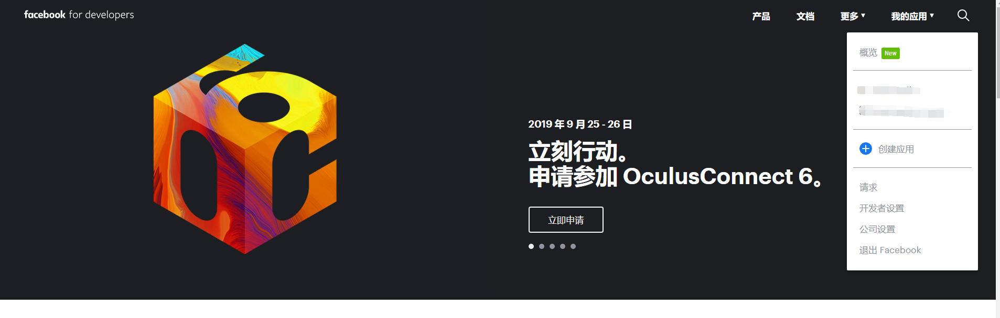
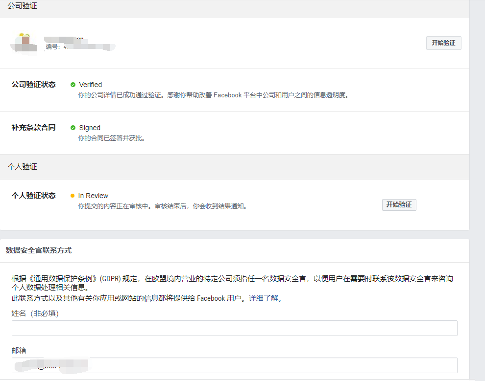
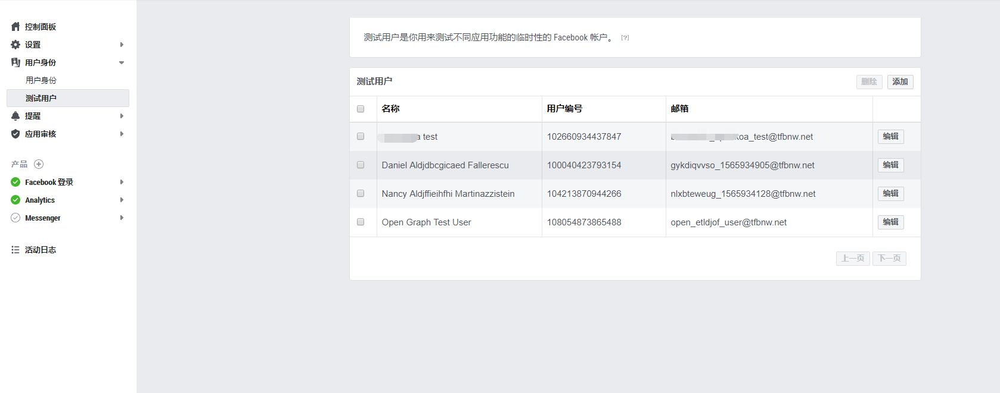
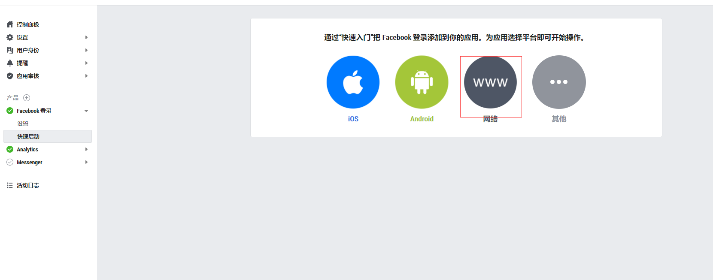
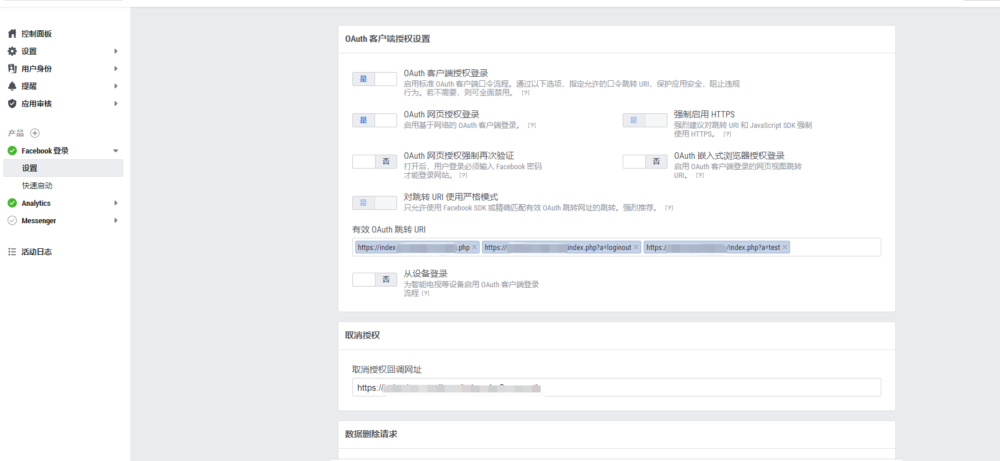
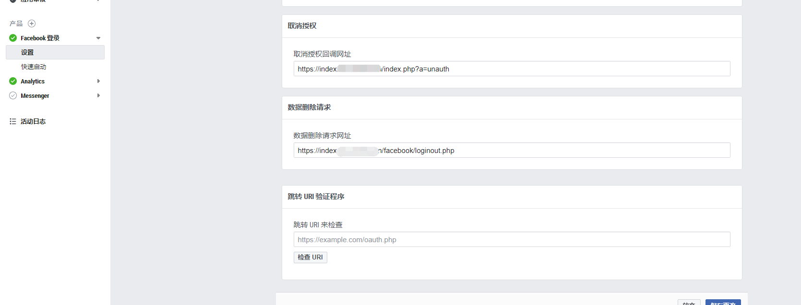
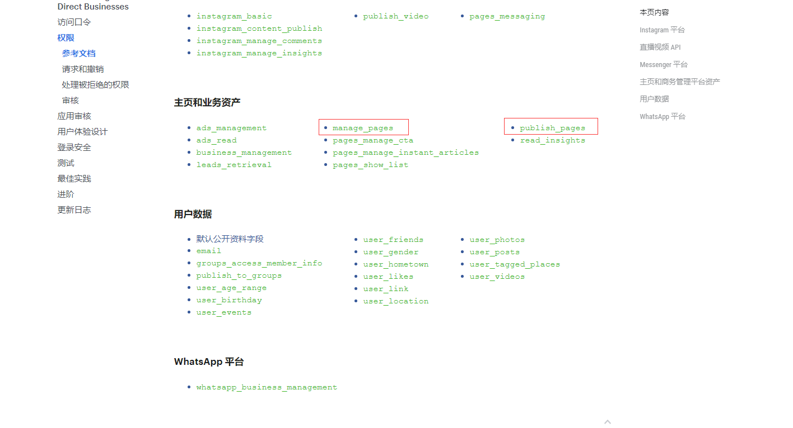
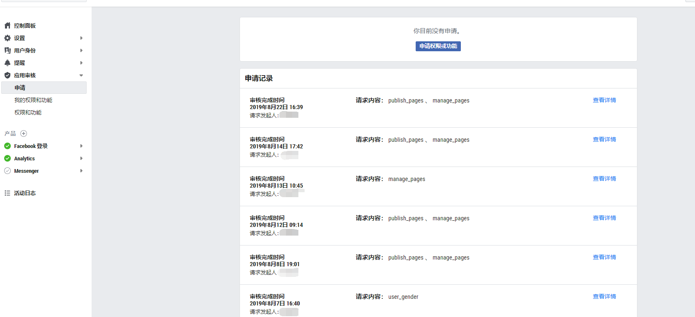
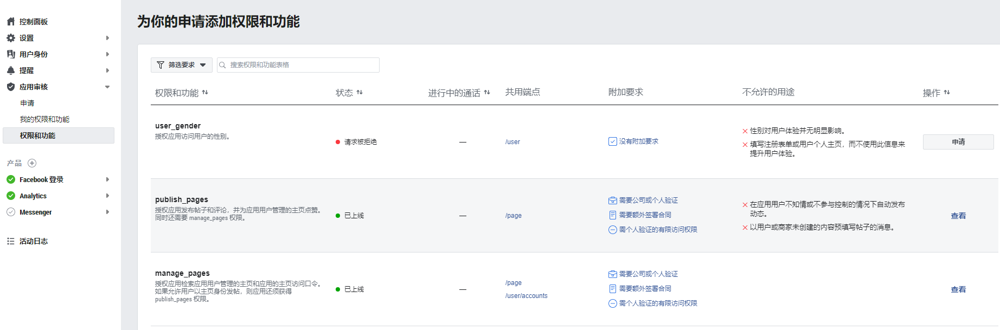
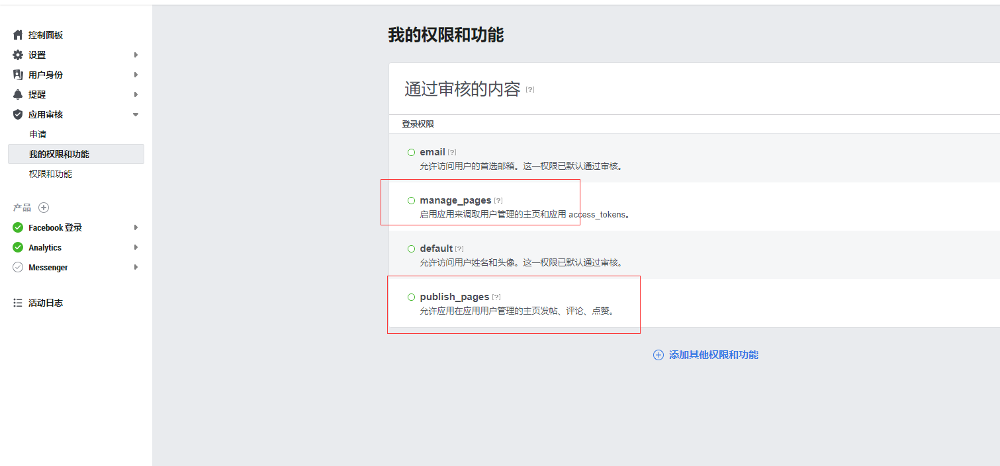

测试帐号可以在本地开发中使用，没有任何权限限制，所有的功能模块都可以通过测试帐号实现，在功能开发完成后，部署到一台线上的测试环境进行Facebook的审核，线上域名必须添加SSL加密

https://developers.facebook.com/docs/reference/php



https://developers.facebook.com/docs/facebook-login/permissions/

这里是我们申请成功的权限，新手第一次对接，感觉太南了，太南了。。。



授权登录和获取临时访问口令：
1 $appId = facebook appId;
2 $appSecret = facebook appSecret;
3 $callbackUrl = facebook callbackUrl;
4 $fb = new Facebook\Facebook([
5 'app_id' => $appId,
6 'app_secret' => $appSecret,
7 'default_graph_version' => 'v2.10',
8 ]);
9
10 $helper = $fb->getRedirectLoginHelper();
11 try {
12 $accessToken = $helper->getAccessToken();
13 } catch(Facebook\Exceptions\FacebookResponseException $e) {
14 echo 'Graph returned an error: ' . $e->getMessage();
15 exit;
16 } catch(Facebook\Exceptions\FacebookSDKException $e) {
17 echo 'Facebook SDK returned an error: ' . $e->getMessage();
18 exit;
19 }
20
21 if (! isset($accessToken)) {
22 if ($helper->getError()) {
23 header('HTTP/1.0 401 Unauthorized');
24 echo '请检查账号设置，Facebook账号无法获得授权，详情：' . $helper->getError() . ' ' . $helper->getErrorCode() . ' ' . $helper->getErrorReason() . ' ' . $helper->getErrorDescription() . "\n";
25 } else {
26 header('HTTP/1.0 400 Bad Request');
27 echo 'Bad request';
28 }
29 exit;
30 }
31
32 $accessToken = $accessToken->getValue();
33 $oAuth2Client = $fb->getOAuth2Client();
34 $tokenMetadata = $oAuth2Client->debugToken($accessToken);
35 $tokenMetadata->validateAppId($appId);
36 $tokenMetadata->validateExpiration();
37
38 $appId = $tokenMetadata->getField('app_id');
39 $type = $tokenMetadata->getField('type');
40 $userId = $tokenMetadata->getField('user_id');
41 $application = $tokenMetadata->getField('application');
42 $isValid = $tokenMetadata->getField('is_valid');
43 $expiresAt = $tokenMetadata->getField('data_access_expires_at');
44 $metadata = [
45 "app_id" => $appId,
46 "type"=> $type,
47 "user_id" => $userId,
48 "application" => $application,
49 "expires_at" => $expiresAt,
50 "is_valid" => $isValid
51 ];
52
53 $auth = new Facebook\Authentication\AccessToken($accessToken);
54 if (! $auth->isLongLived()) {
55 try {
56 $accessToken = $oAuth2Client->getLongLivedAccessToken($accessToken);
57 } catch (Facebook\Exceptions\FacebookSDKException $e) {
58 echo "<p>Error getting long-lived access token: " . $e->getMessage() . "</p>\n\n";
59 exit;
60 }
61 }
62
63
65 $this->cache->set($this->facebookAccessTokenKey,(string) $accessToken );
66 $this->cache->set($this->facebookKey, json_encode($metadata));
67
68 header("Location: {$callbackUrl}"); 1 /**
2 * 获取临时访问口令
3 * @param $pageId
4 * @param $access_token
5 * @return mixed
6 */
7 public function getPageAccessToken($pageId, $access_token)
8 {
9 $accessTokenUrl = "https://graph.facebook.com/v4.0/{$pageId}?fields=access_token&access_token={$access_token}";
10 $pageAccessTokenInfo = curl($accessTokenUrl);
11 try{
12 $pageAccessTokenInfo = json_decode($pageAccessTokenInfo, true);
13 $pageAccessToken = $pageAccessTokenInfo['access_token'];
14 }catch (Exception $e) {
15 $this->showResults(-1, null, '获取page_access_token失败！');
16 }
17
18 return $pageAccessToken;
19 }manage_pages 和 publish_pages ，权限不同的自行更改！ /**
* 获取facebook授权code
*/
public function bindAction(){
$redirectUrl = facebook redirectUrl;
$appId = facebook appId;
$appSecret = facebook appSecret;
$fb = new Facebook\Facebook([
'app_id' => $appId,
'app_secret' => $appSecret,
'default_graph_version' => 'v2.10',
]);
$helper = $fb->getRedirectLoginHelper();
$permissions = ['manage_pages','publish_pages'];
$codeUrl = $helper->getLoginUrl($redirectUrl, $permissions);
$this->showResults(1, ['url' => $codeUrl]);
} /**
* facebook分享发布
*/
public function facebookShareAction()
{
$data = getPost('data');//一次请求中只能有一个选项 1，分享链接， 2单张图片链接， 3，多张图片ID
$content['message'] = $data['message'];
if ($data['link']) {
$content['link'] = $data['link'];
} else if ($data['url']) {
$content['link'] = '';
$content['url'] = $data['url'];
} else if ($data['attached_media']) {
$content['link'] = '';
$content['url'] = '';
$media = explode(',', $data['attached_media']);
if (count($media) >= 10) {
$this->showResults(-2, null, '一次上传最多不能超过9张图片！');
}
foreach ($media as $mediaId) {
$temp[] = ['media_fbid' => $mediaId];
}
$content['attached_media'] = json_encode($temp);
}
$appId = facebook appId;
$appSecret = facebook appSecret;
$fbAccessToken = $this->cache->get($this->facebookAccessTokenKey);
if (!$fbAccessToken) {
$this->showResults(-1, null, '请先绑定Facebook账号！');
}
$fb = new Facebook\Facebook([
'app_id' => $appId,
'app_secret' => $appSecret,
'default_graph_version' => 'v2.3',
]);
try {
$response = $fb->get(
'/me/accounts',
$fbAccessToken
);
} catch(FacebookExceptionsFacebookResponseException $e) {
echo 'Graph returned an error: ' . $e->getMessage();
exit;
} catch(FacebookExceptionsFacebookSDKException $e) {
echo 'Facebook SDK returned an error: ' . $e->getMessage();
exit;
}
$accountInfo = $response->getBody();
$accountInfo = json_decode($accountInfo, true);
$pageId = $accountInfo['data'][0]['id'];
$accessToken = $accountInfo['data'][0]['access_token'];
$pageAccessToken = $this->getPageAccessToken($pageId, $accessToken);
try {
$response = $fb->post(
'/' . $pageId . '/feed',
$content,
$pageAccessToken
);
} catch(FacebookExceptionsFacebookResponseException $e) {
echo 'Graph returned an error: ' . $e->getMessage();
exit;
} catch(FacebookExceptionsFacebookSDKException $e) {
echo 'Facebook SDK returned an error: ' . $e->getMessage();
exit;
}
$info = $response->getBody();
$info = json_decode($info, true);
$this->showResults(1, ['data' => ['id' => $info['id']]]);
}